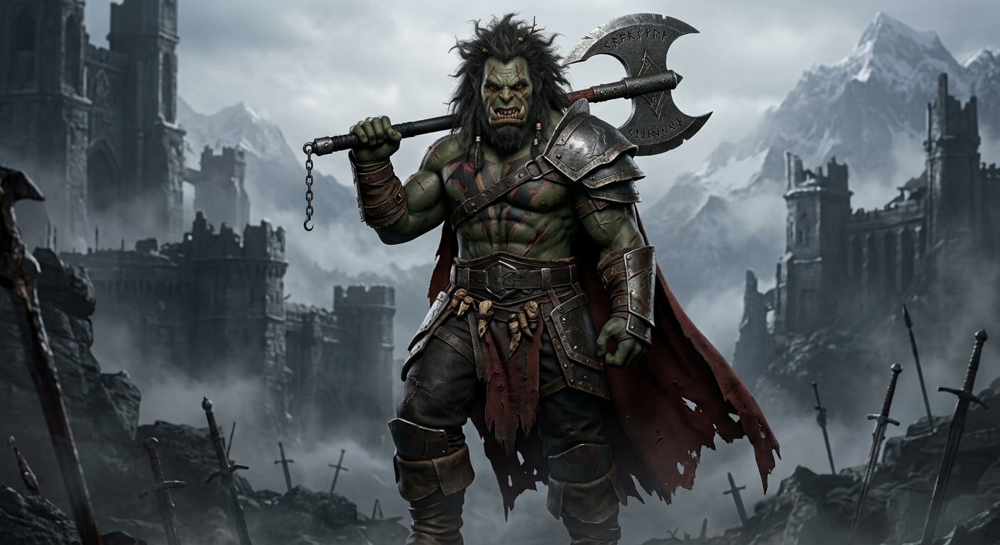

Varkhan

Raza: Orco
Clase: Guerrero
Nivel: 38
Estadísticas de Varkhan
| Estadística | Valor |
|---|---|
| Fuerza | 95 |
| Resistencia | 88 |
| Agilidad | 62 |
| Inteligencia | 45 |
| Experiencia | 7.850 XP |
Habilidades
- Golpe de Guerra: ataque fuerte utilizando su hacha.
- Furia del Orco: aumenta temporalmente su fuerza.
- Rugido de Batalla: intimida a los enemigos cercanos.
- Resistencia de Hierro: reduce parte del daño recibido.
Historia
El nacimiento de un guerrero
Varkhan nació en una tribu orca que vivía en una zona peligrosa. Desde pequeño aprendió que sobrevivir era más importante que demostrar miedo.
Cuando todavía era joven, su aldea fue atacada por un ejército enemigo. Perdió a varios miembros de su familia y desde ese momento comenzó a entrenar para convertirse en guerrero.
El camino de la venganza
Con los años, Varkhan se convirtió en uno de los guerreros más fuertes de su clan. Sin embargo, nunca olvidó el ataque que destruyó su hogar.
Ahora viaja por diferentes territorios buscando al líder responsable de aquella masacre. Su objetivo no es solamente vengarse, sino demostrar que su pueblo todavía puede levantarse después de la guerra.